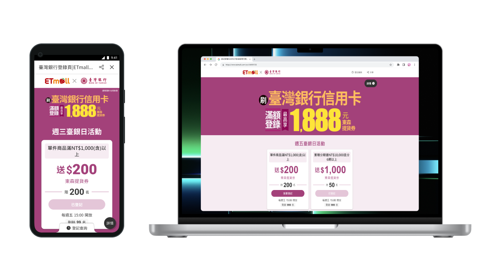
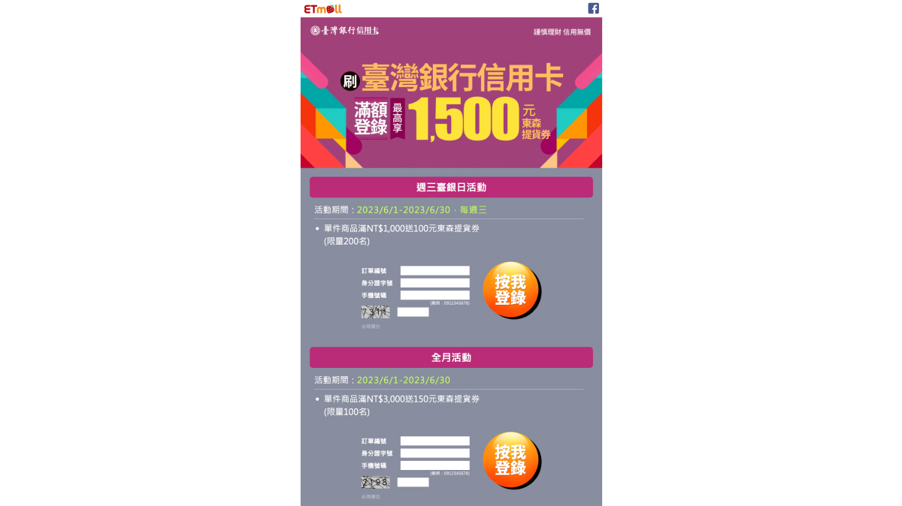
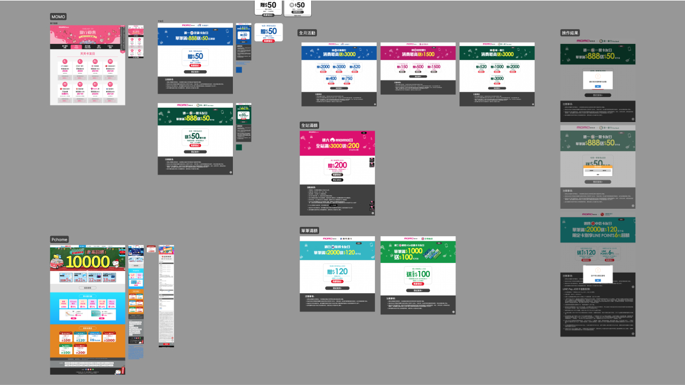
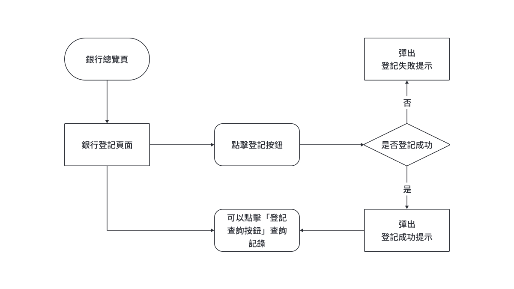
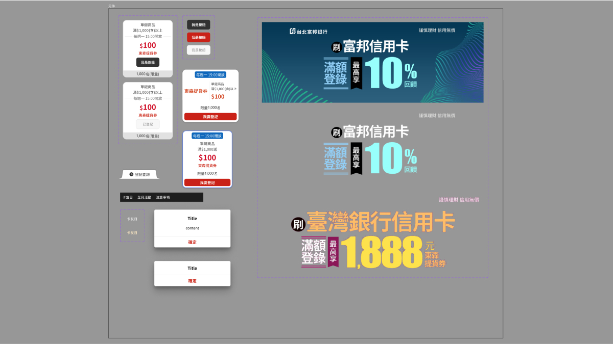
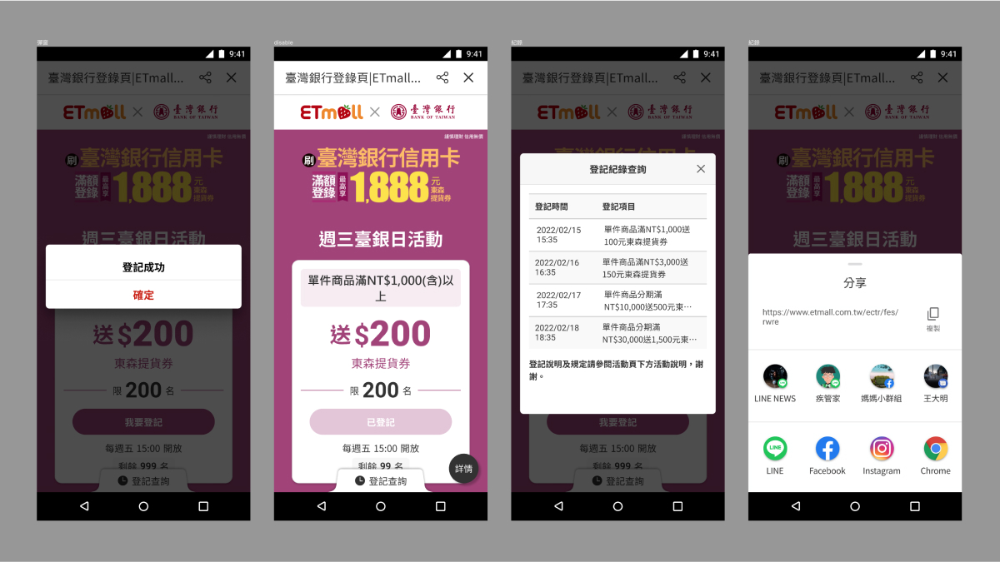

銀行登記機制頁

專案簡介
讓同仁可以更快速且方便的設定有關銀行的優惠內容，只需設定相關內容，就能在網頁顯示，以因應多元的銀行優惠。
我的角色
除了擔任UI設計外，還肩負研發與PO和需求端之間的橋樑。
我在此專案做了
- 收集及分析參考頁面
- 與研發及PO溝通資訊架構、使用者流程
- 設計整體視覺頁面及色彩規則，並交付設計稿
- 製作前台設計說明及後台上稿規則PPT
專案介紹
- 項目背景 因應銀行多元的活動，且每個活動都有不同的條件和時間，而現在操作的同仁必須將需求整理好後，統一由研發花時間跟人力來設定在頁面之中，而且是每次變動或者調整一個「卡片」的內容，都需經過一次研發，流程非常的冗長且麻煩。
- 延伸問題 因此畫面年久未維護，造成資訊混雜、文字階層不明確，用色意義不明，也在此次規劃中一併調整，並更新設計系統。

線上頁面
相關研究及參考
- 競網研究及分析 觀察各家操作流程，幾乎都大同小異，另外UX Writing卻都不盡相同，大致有以下幾點：
- 文案利用文字大小區分階層明確
- 畫面整體用色較為簡單
- 文案資訊之間的空間較為寬鬆
- 項目分類呈現清楚

競品參考分析紀錄
- 現有產品問題 經過研究和整理後才發現自家的文案常會過於冗長、資訊也會過於擁擠，文字的階層不明確，再加上用色較重，可能會導致使用者的視覺無法集中。
資訊架構
- 建立使用者流程(User Flow)，確認資格符合與否的操作流程、時間內外的判斷等等
- 需求端、設計、研發三方來回確認需求項目、開發內容及操作上想要達到的效果
- 與工程師討論並迭代驗證資訊架構及操作流程的完整性
- 與需求端來回討論文案的內容，確保文案清楚又不會過於冗長

使用者操作流程
-
操作使用流程概要
-
點擊當下的判斷：
- 是否符合時間
- 會員身份
- 是否有符合資格的訂單、是否還有「名額」
- 會主動記取用戶的信用卡資料或是傳送部分資訊給銀行端(momo登記頁下方有寫明會要求該資料)
- 以上流程圖的狀態為「登入中」，且在登記時間內的情況下
- 希望使用者只要點擊按鈕即可完成登記(以上流程可參考momo現行登記方式)
-
點擊當下的判斷：
設計系統
- 設計畫面及操作原型
- 提供設計畫面，並與研發討論設計細節
- 交付設計標注檔案及設計說明ppt

更新後的設計元件示意

各種狀態示意
結果
- 這個專案雖然看似簡單，卻是我目前碰過牽扯前、後端最多的一個專案之一，主要是前、後台的資料對應，在規劃前台介面時，就要設想到後台是如何設定該區塊，另外操作邏輯也是十分複雜，雖然看起來只是單純的頁面，但背後的判斷卻非常龐大，例如你是否符合資格，符合資格後是否有登入，有登入的情況下應該要顯示什麼資料，另外還有時間，是否在活動時間...等等以上總總的邏輯判斷。
- 再來就是頁面的呈現，因為屬於RWD畫面，所以在不同裝置底下，各卡片資訊的排列組合，Banner尺寸的大小縮放，以及其他種種可能因不同裝置而產生的問題，都要一併先考慮清楚，並且寫出邏輯規範來對應，經由這專案，可以感覺到自己有所成長。